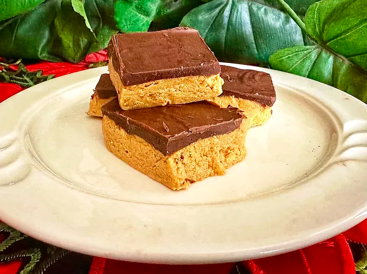

Chocolate Peanutbutter Protein Bars

Description
Chocolate peanut butter protein bars are easy to make in a small batch, and absolutely delicious. Using a good protein powder is the key. If there is a downside, it might be how hard it will be to only eat one.
Ingredients
- 3/4 cup peanut butter
- 1/2 cup vanilla protein powder
- 2 tablespoons pure maple syrup
- 1 teaspoon vanilla extract
- 1/8 teaspoon salt
- 1/2 cup semisweet chocolate chips
- 1 teaspoon coconut oil
Steps
- Line an 8 1/2x4 1/2-inch loaf pan with parchment paper, leaving overhang on all sides to make it easy to remove bars from the pan. Set aside.
- Place peanut butter, protein powder, maple syrup, vanilla and salt in a bowl and mix until well combined; press into the prepared pan. Set aside.
- Place chocolate chips and oil in a microwave safe bowl. Microwave for 30 seconds, stir. Repeat until chips are completely melted when stirred. Pour over bars, smooth chocolate. Refrigerate until set, about 30 minutes. Cut into 8 bars.